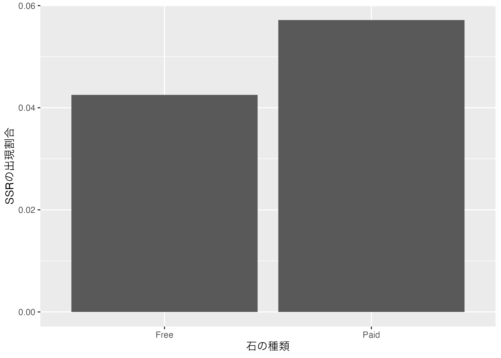
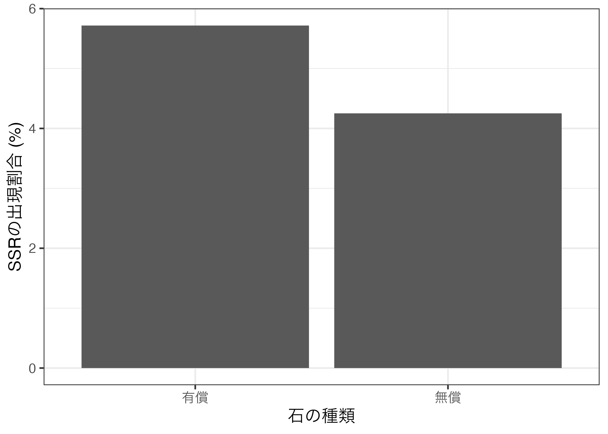
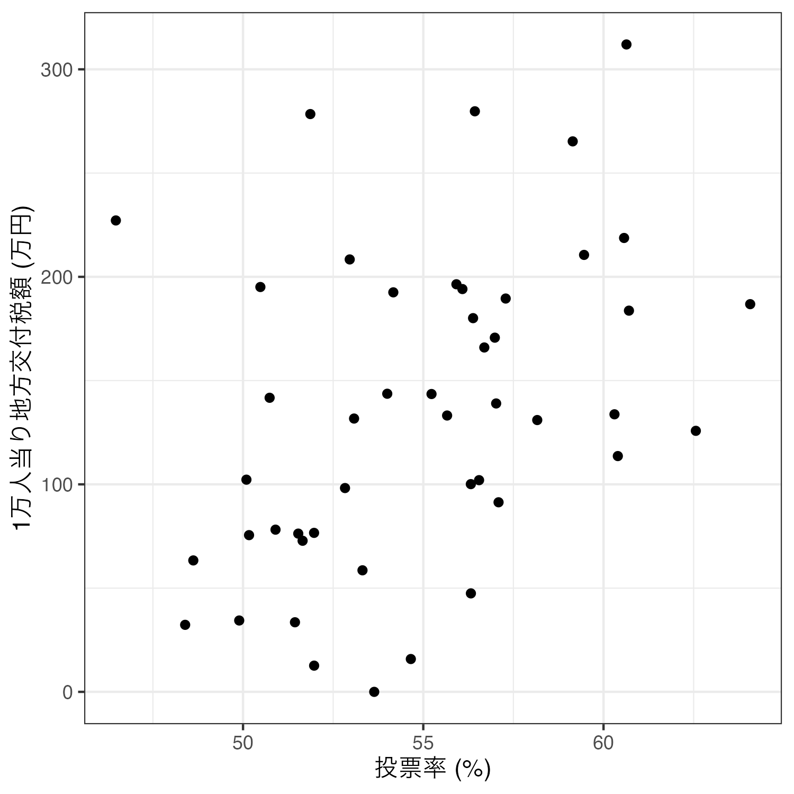
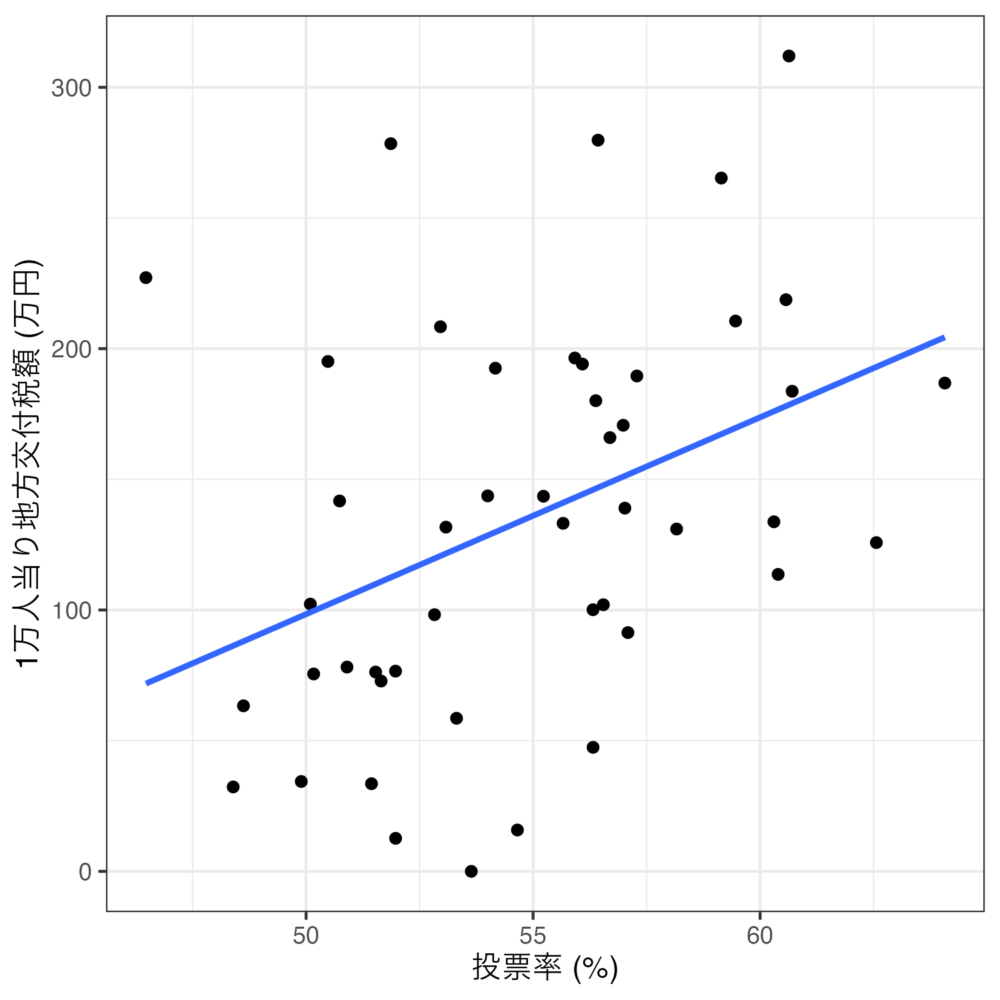

第7回講義資料
変数間の関係
スライド
セットアップ
今回の実習で使用するパッケージとデータセットを読み込む。各データセットの詳細はスライドを参照すること。
\(t\)検定
まずはgacha_dfの中身を確認する。このデータは前回講義データと同じデータであるが、ガチャ結果（result）の列をダミー変数にしたものを追加したデータである。
# A tibble: 4,772 × 8
player trial stone_type result result_N result_R result_SR result_SSR
<dbl> <dbl> <chr> <chr> <dbl> <dbl> <dbl> <dbl>
1 1 1 Paid R 0 1 0 0
2 1 2 Paid R 0 1 0 0
3 1 3 Paid SR 0 0 1 0
4 1 4 Free R 0 1 0 0
5 1 5 Paid N 1 0 0 0
6 1 6 Free N 1 0 0 0
7 1 7 Free SSR 0 0 0 1
8 1 8 Free N 1 0 0 0
9 1 9 Free N 1 0 0 0
10 1 10 Free N 1 0 0 0
# ℹ 4,762 more rows 続いて、{summarytools}のdescr()関数でgacha_dfの記述統計を確認する。出力する記述統計量は平均値、標準偏差、最小値、最大値、有効ケース数である。また、プレイヤーのID（layer）はデータ上は数値型ではあるものの、実質名目変数であるため、記述統計から除外する。
Code 03
Descriptive Statistics
Mean Std.Dev Min Max N.Valid
---------------- ------- --------- ------ ------- ---------
trial 34.01 24.22 1.00 99.00 4772.00
result_N 0.56 0.50 0.00 1.00 4772.00
result_R 0.25 0.43 0.00 1.00 4772.00
result_SR 0.15 0.35 0.00 1.00 4772.00
result_SSR 0.05 0.21 0.00 1.00 4772.00 問題は石の種類（stone_type）とガチャの結果（result）が文字型変数であることから記述統計量が表示されない点である。ガチャの結果は既にダミー変数（result_で始まる4つの変数）になっているので問題ないが、石の種類はもう一度ダミー変数に変換する必要がある。
今回はダミー化した石の種類を分析に使う予定はなく、記述統計量さえ見られるのであれば十分だ。したがって、gacha_dfをdescr()関数に渡す前にdummy_cols()関数でダミー変数化する。
Code 04
Descriptive Statistics
Mean Std.Dev Min Max N.Valid
--------------------- ------- --------- ------ ------- ---------
trial 34.01 24.22 1.00 99.00 4772.00
result_N 0.56 0.50 0.00 1.00 4772.00
result_R 0.25 0.43 0.00 1.00 4772.00
result_SR 0.15 0.35 0.00 1.00 4772.00
result_SSR 0.05 0.21 0.00 1.00 4772.00
stone_type_Free 0.66 0.48 0.00 1.00 4772.00
stone_type_Paid 0.34 0.48 0.00 1.00 4772.00 検定の前にgroup_by()関数とsummarise()関数を使用し、石の種類（stone_type）ごとのSSR出現有無（result_SSR）の平均値を計算してみよう。結果はmean_dfという名のオブジェクトとして格納する。
Code 05
# A tibble: 2 × 2
stone_type SSR
<chr> <dbl>
1 Free 0.0425
2 Paid 0.05722つの出現割合の差は0.0425 - 0.0572、約-0.015であり、これを%で換算すると約-1.5%ポイントである。つまり、無償石の方が有償石に比べSSR出現の割合が約1.5%ポイント低いことを意味する。これを棒グラフで示すと以下のようになる。
Code 06

図に英語と日本語が混在することは良くないので、mean_dfをggplot()に渡す前にstone_typeを日本語にリコーディングし、SSR列には100をかけて%に換算する。リコーディングは3値以上であれば、case_when()、またはrecode()を使うが、今回は"Free"か"Paid"かの2値となるので、if_else()を使用する。
今回はstone_typeが"Feee"であれば（stone_type == "Free"）、"無償"と、それ以外は"有償"とリコーディングする。
Code 07

最後にこの約-1.5%ポイントの差が統計的に有意な差かどうかを検定してみよう。検定の際、帰無仮説は「無償石のSSRの確率と有償石のSSRの確率の差は0である」であり、対立仮説は「無償石のSSRの確率と有償石のSSRの確率の差は0ではない」となる。有意水準（\(\alpha\)）は予め0.05と設定しておく。
（2群の）平均値の差の検定にはt.test()を利用する。第一引数は回帰式であり、書き方は「平均値の差を見る変数名 ~ グループを示す変数名」である。今回は石の種類（stone_type）ごとのSSR出現有無（result_SSR）の平均値の差を検定するため、result_SSR ~ stone_typeと指定する。第二引数はdataであり、これらの変数が格納されているデータのオブジェクト名（今回はgacha_df）を指定する。
Welch Two Sample t-test
data: result_SSR by stone_type
t = -2.1653, df = 2960.6, p-value = 0.03045
alternative hypothesis: true difference in means between group Free and group Paid is not equal to 0
95 percent confidence interval:
-0.027932426 -0.001384442
sample estimates:
mean in group Free mean in group Paid
0.04251918 0.05717762 今回の例の場合、「SSRの出現有無」が0か1のダミー変数であるため、厳密な意味では平均値の差の検定（\(t\)検定）よりも比率の差の検定が適切である。実は平均値の差の検定と比率の差の検定の結果が大きくずれることはほぼないが（点推定値は必ず一致する）、念の為にprop.test()を利用して比率の差の検定を行ってみよう。
prop.test()にはxとnの2つの引数が必要であり、それぞれ成功の回数と試行回数のベクトルを指定する。今回は無償石で133回、有償石で94回SSRが引けたため、x = c(133, 94)を指定する。また、無償石でのガチャ回数は3128回、有償石のそれは1664回だったのでn = c(3128, 1644)と指定する。
2-sample test for equality of proportions with continuity correction
data: c(133, 94) out of c(3128, 1644)
X-squared = 4.7923, df = 1, p-value = 0.02859
alternative hypothesis: two.sided
95 percent confidence interval:
-0.0283874901 -0.0009293778
sample estimates:
prop 1 prop 2
0.04251918 0.05717762 平均値の差の検定と比率の差の検定の結果において点推定値は必ず一致するが、\(p\)値や信頼区間にやや違いが生じる。今回の\(p\)値は約0.029である。\(t\)検定では約0.030であったため、その違いは約0.001であり、帰無仮説が棄却できる点では同じ結果が得られた。
| 手法 | 点推定値 | \(p\)値 | 95%信頼区間（下限） | 95%信頼区間（上限） |
|---|---|---|---|---|
| 平均値の差の検定 | -0.015 | 0.030 | -0.028 | -0.001 |
| 比率の差の検定 | -0.015 | 0.029 | -0.028 | -0.001 |
もし平均値を比較するグループが3つ以上である場合は、\(t\)検定を行わず、分散分析（Analysis of variance; ANOVA）を実施する。詳しいことはインターネットで検索してみよう。
相関分析
まずはsubsidy_dfの中身を確認してみよう。
# A tibble: 47 × 4
ID Pref Turnout Subsidy
<dbl> <chr> <dbl> <dbl>
1 1 北海道 60.3 134.
2 2 青森県 54.2 193.
3 3 岩手県 59.1 265.
4 4 宮城県 52.8 98.2
5 5 秋田県 60.6 219.
6 6 山形県 64.1 187.
7 7 福島県 56.7 166.
8 8 茨城県 51.5 76.3
9 9 栃木県 51.7 72.8
10 10 群馬県 52.0 76.6
# ℹ 37 more rows つづいて、当該都道府県の投票率（Turnout）と一人あたり補助金額（Subsidy）の記述統計量を確認する。
Code 11
Descriptive Statistics
Mean Std.Dev Min Max N.Valid
------------- -------- --------- ------- -------- ---------
Turnout 54.91 4.01 46.47 64.07 47.00
Subsidy 135.40 75.88 0.00 311.98 47.00相関分析を行う場合、主に（１）散布図の作成と（２）相関係数の計算（と統計的有意性検定）が必要となる。まずは、散布図を作成してみよう。今回は横軸が投票率、縦軸が一人あたり補助金額の散布図を作成する。
Code 12

2つの変数の関係を最も適切に表す直線（=回帰直線）を追加するためには、geom_smooth()レイヤーを足す。2次元平面上の散布図の場合、xとyは同じ変数をマッピングする必要がある。また、直線を出すためにはmethod = "lm"引数を追加し、95%信頼区間を消すためにse = FALSEも追加する。余裕があれば、各引数を消した場合の結果も確認してみよう。
Code 13

これで散布図+回帰直線の図は完成したが、より効率的なコードの書き方がある。先ほどのコードの場合、geom_point()とgeom_smooth()のマッピング（aes()関数の内部）は共通する要素があり、それはx = Turnoutとy = Subsidyである。複数の幾何オブジェクト（geom_で始まる関数）がマッピングを共有する場合は、以下のようにggplot()内部でマッピングを指定することができる。
Code 14
最後に相関係数を計算し、統計的有意性検定を行ってみよう。Rが提供する相関分析の関数はいくつかあるが、統計的有意性検定も同時に行う場合はcor.test()を使用する。引数は相関係数を計算する2つのベクトルを指定する。今回はsubsidy_dfのTurnout列（subsidy_df$Turnout）とsubsidy_dfのSubsidy列（subsidy_df$Subsidy）がそれである。
今回の例は「連続変数\(\times\)連続変数」の相関分析であるが、「順序変数\(\times\)順序変数」もしくは「順序変数\(\times\)連続変数」の相関分析も可能である。しかし、cor.test()に第3引数としてmethod = "spearman"、またはmethod = "kendall"を追加すること。
Code 15
Pearson's product-moment correlation
data: subsidy_df$Turnout and subsidy_df$Subsidy
t = 2.9128, df = 45, p-value = 0.005558
alternative hypothesis: true correlation is not equal to 0
95 percent confidence interval:
0.1254750 0.6151042
sample estimates:
cor
0.3982905 相関係数は約0.398であり、\(p\)値は約0.006である。\(p\)値が一般的に使われる有意水準（\(\alpha = 0.05\)）より小さいことから、統計的に有意な「正の」相関関係があると考えられる。つまり、「投票率が高い都道府県ほど一人あたり補助金額が多い傾向がある」ことを意味する。
ただし、この相関関係が因果関係、つまり「投票率が上がると補助金額が増える」ということを意味するわけではない。そもそも投票率が原因で、補助金額が結果であるかどうかすらも不明である。補助金額が増えることによって、有権者がその見返りとして投票に参加したかも知れない。相関関係と因果関係は厳格に区別すべきであり、そのためには緻密な理論・仮説、もしくは研究デザインが必要である。
\(\chi^2\)検定
まずはpasta_dfの中身を確認してみよう。
# A tibble: 1,135 × 4
ID Female Over40 Pasta
<dbl> <dbl> <dbl> <chr>
1 1 0 0 Naporitan
2 2 1 0 Naporitan
3 3 0 0 Naporitan
4 4 0 0 Carbonara
5 5 0 0 Naporitan
6 6 0 1 MeatSauce
7 7 0 1 Peperoncino
8 8 0 1 MeatSauce
9 9 1 0 Carbonara
10 10 0 0 Carbonara
# ℹ 1,125 more rows つづいて、Female変数とOver40変数をリコーディングし、それぞれGender_DとOver40_Dという新しい列として追加する。具体的にはFemaleの値が1なら"Female"、それ以外は"Male"の値を割り当てたGender_D変数を作成し、Over40の値が1なら"41 to 80"、それ以外は"18 to 40"の値を割り当てたOver40_Dを作成する。各変数はfactor()関数を使ってfactor化する。要素の順番はGender_Dの場合"Male"、"Female"、Over40_Dは"18 to 40"、"41 to 80"とする。
Code 17
# A tibble: 1,135 × 6
ID Female Over40 Pasta Gender_D Over40_D
<dbl> <dbl> <dbl> <chr> <fct> <fct>
1 1 0 0 Naporitan Male 18 to 40
2 2 1 0 Naporitan Female 18 to 40
3 3 0 0 Naporitan Male 18 to 40
4 4 0 0 Carbonara Male 18 to 40
5 5 0 0 Naporitan Male 18 to 40
6 6 0 1 MeatSauce Male 41 to 80
7 7 0 1 Peperoncino Male 41 to 80
8 8 0 1 MeatSauce Male 41 to 80
9 9 1 0 Carbonara Female 18 to 40
10 10 0 0 Carbonara Male 18 to 40
# ℹ 1,125 more rows 独立性の検定を行う前に、2つの名目変数のクロス表から作成する。ここでは2つのクロス表を作成する。1つ目は性別（Gender_D）と好きなパスタ（Pasta）のクロス表、2つ目はj年齢（Over40_D）と好きなパスタ（Pasta）のクロス表である。作り方はtable()関数の中に2つの名目変数のベクトルを指定するだけだ。
Carbonara MeatSauce Naporitan Peperoncino
Male 139 201 145 105
Female 139 160 153 93
Carbonara MeatSauce Naporitan Peperoncino
18 to 40 138 177 160 65
41 to 80 140 184 138 133 周辺分布を追加するためには、クロス表をパイプ演算子を使ってaddmargins()関数に渡せば良い。
Carbonara MeatSauce Naporitan Peperoncino Sum
Male 139 201 145 105 590
Female 139 160 153 93 545
Sum 278 361 298 198 1135
Carbonara MeatSauce Naporitan Peperoncino Sum
18 to 40 138 177 160 65 540
41 to 80 140 184 138 133 595
Sum 278 361 298 198 1135 また、クロス表を度数（frequency）でなく、割合で示すこともできる。この場合、クロス表をprop.table()関数に渡すだけで良い。
Carbonara MeatSauce Naporitan Peperoncino
Male 0.12246696 0.17709251 0.12775330 0.09251101
Female 0.12246696 0.14096916 0.13480176 0.08193833
Carbonara MeatSauce Naporitan Peperoncino
18 to 40 0.12158590 0.15594714 0.14096916 0.05726872
41 to 80 0.12334802 0.16211454 0.12158590 0.11718062 むろん、割合のクロス表を更にaddmargins()に渡すことで、周辺分布を追加することもできる。
Carbonara MeatSauce Naporitan Peperoncino Sum
Male 0.12246696 0.17709251 0.12775330 0.09251101 0.51982379
Female 0.12246696 0.14096916 0.13480176 0.08193833 0.48017621
Sum 0.24493392 0.31806167 0.26255507 0.17444934 1.00000000
Carbonara MeatSauce Naporitan Peperoncino Sum
18 to 40 0.12158590 0.15594714 0.14096916 0.05726872 0.47577093
41 to 80 0.12334802 0.16211454 0.12158590 0.11718062 0.52422907
Sum 0.24493392 0.31806167 0.26255507 0.17444934 1.00000000また、割合を0〜1でなく、0%〜100%で表示したい場合は、更に100をかければ良い。数学・統計学の世界において確率や割合は0〜100でなく、0〜1を使う場合が多いものの、人間からみれば前者の方が読みやすいかも知れない。
Carbonara MeatSauce Naporitan Peperoncino Sum
Male 12.246696 17.709251 12.775330 9.251101 51.982379
Female 12.246696 14.096916 13.480176 8.193833 48.017621
Sum 24.493392 31.806167 26.255507 17.444934 100.000000
Carbonara MeatSauce Naporitan Peperoncino Sum
18 to 40 12.158590 15.594714 14.096916 5.726872 47.577093
41 to 80 12.334802 16.211454 12.158590 11.718062 52.422907
Sum 24.493392 31.806167 26.255507 17.444934 100.000000 このような名目変数間の関係が独立しているかどうかを検定する\(\chi^2\)の検定は、クロス表をchisq.test()関数に渡すだけで実装できる。まずは性別と好きなパスタの関係を確認してみよう。
Pearson's Chi-squared test
data: table(pasta_df$Gender_D, pasta_df$Pasta)
X-squared = 3.8204, df = 3, p-value = 0.2815検定統計量である\(\chi^2\)統計量は約3.820であり、\(p\)値は約0.282である。\(p\)値が一般的に採用される有意水準（\(\alpha = 0.05\)）以上であることから、性別と好きなパスタの間には関係性があるとは言えないという結論が得られた。年齢とパスタの関係はどうだろう。
Pearson's Chi-squared test
data: table(pasta_df$Over40_D, pasta_df$Pasta)
X-squared = 22.515, df = 3, p-value = 5.095e-05検定統計量である\(\chi^2\)統計量は約22.515であり、\(p\)値は0.001未満である。\(p\)値が一般的に採用される有意水準（\(\alpha = 0.05\)）未満であることから、年齢と好きなパスタの間には統計的に有意な関係があると結論づけることができる。ただし、「何かの関係がある」ことまでは分かっても、具体的にどのような関係があるかは、クロス表を見ながら解釈する必要がある。今回の例だと、41歳以上の人は40歳以下の人に比べ、ペペロンチーノを好む傾向があることが分かる。